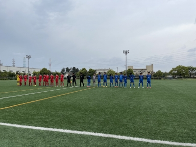
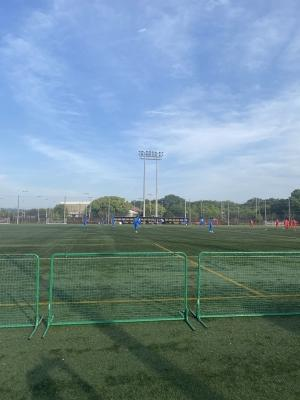

やった ! リベンジ !!
パロマカップの2次予選が行われたこのゴールデンウィーク、
Himawariくんたちは実力の200％の力を出して
がんばりました(笑)。

5月1日(土)
昨年のU-14クラブユース1次予選、5-0でぺっちゃんこにされた
尾張FCとの再戦になりました。
この日は夕方からカミナリの予報が出ていて、
予定より時間を繰り上げて開始だったんですが、
結局、前半が終わった時点でカミナリが鳴り、雨も落ちてきて
途中切り上げとなってしまいました。
後半戦は後日、日を改めて・・・
ということになったこのリベンジマッチ、
前半が終わった時点では2-1で、
後日の再試合では1点を追うカタチになりました。
5月3日(月)
2次予選の2戦目は、TOPリーグに所属する東海スポーツ。
前半、早い段階でコーナーから直接蹴り込まれ、あっという間に2-0。
その後前半終了間際で1点を返し、2-1で折り返しました。
しかし後半もじわじわと攻め込まれ、4-1と3点の差を付けられました。
いつもならそのままずるずると相手のペースに引きずられ
そのまま負け試合となるところが、この日Himawariくんたちは
実力以上の力と根性を発揮し、後半の半ば以降、
奇跡の反撃を開始します(笑)。
最後の得点は後半36分過ぎ、アディショナルタイムに入ってからでした。
結果は4-4のドロー。
ホント、奇跡が起こったよ ! (笑)
以前大敗した相手との再試合の前に、格上のチーム相手に
引き分けたことはヤツらに勢いを与えたと思います。
いいイメージを持ったまま望んだ翌日の再試合では
ヤツらの「行くぞ ! 」という勢いが勝利を引き寄せたんじゃないかな。

5月4日(火)
2-1でスタートした後半戦、相手チームの前線・・・上手いんだもん(泣)
たびたび攻め込まれて、ホントひやひやしっぱなしでした。
給水タイム直後、それまで攻め込まれては耐えてきたところに
チャンス到来で、同点ゴール。
そのあとも耐える時間は続き・・・このまま引き分けで終わるのかな
と、思い始めた終了まで5分を切った頃、
なんと、ハンドでPK を獲得・・・これで1点勝ち越し。
結果2-3で、昨年の雪辱を果たすことができました。
・・・いゃあ・・・コレはホントにうれしかった(笑)。
次の試合は8日(土)デス。
現在Himawariくんたちは、まさかのグループ暫定1位 ! (笑)
次の試合も気を引き締めて望んで欲しい・・・そして是非勝って、
グループ1位で ! (笑)次のトーナメント戦へ進んでくれぃ !